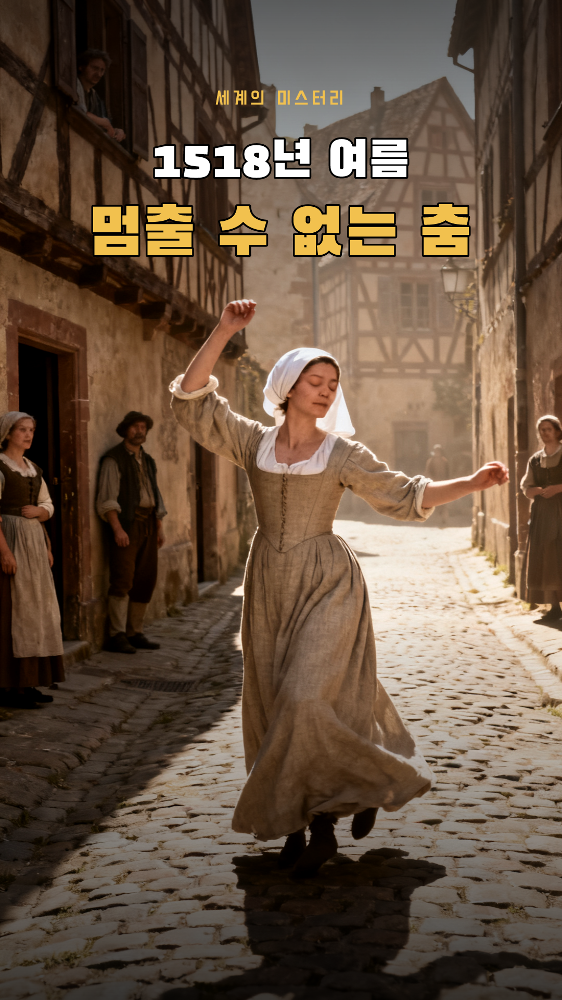
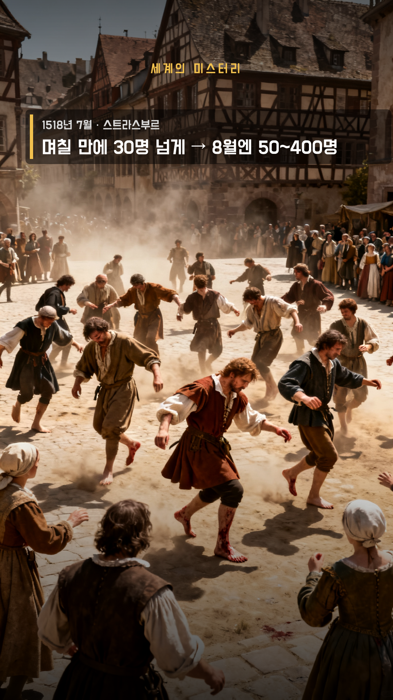
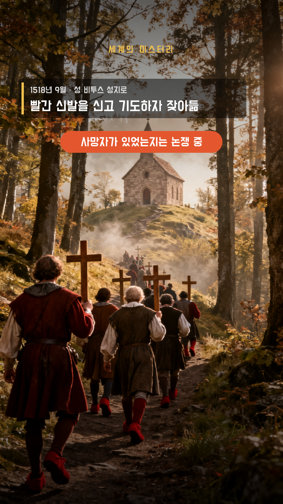
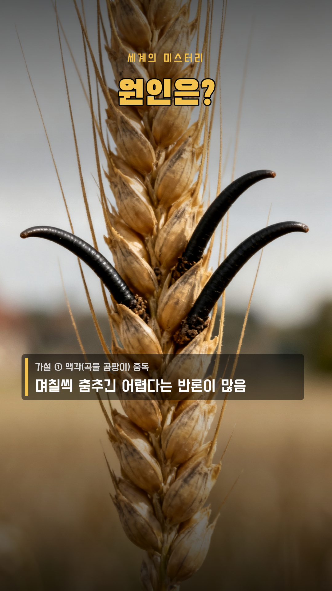

60초 (+ 썸네일 1.5초) · 1080×1920 · 30fps · 자막 y=1480 · 내레이션 ko-KR-Chirp3-HD-Charon · 세계의 미스터리 · 실사 다큐 (실제 옛 그림 3장면 + 영상 3장면 + AI 사진 5장면) (Seedream 4.0 사진 → WAN 2.2 영상)

S010:00–0:05 · 5.9초
모션영상 S01, t1 팝 0.1s, t2 도장 0.8s
내레이션1518년 여름, 한 여성이 거리에서 춤을 추기 시작했어요 / 그런데 며칠이 지나도 멈추지 못했죠
S020:05–0:09 · 3.6500000000000004초
모션still 카메라 이동 (사진 · 실제 자료) 0.0s, tag 페이드 0.1s
내레이션프랑스 스트라스부르, 당시엔 신성 로마 제국의 도시였어요

S030:09–0:15 · 5.85초
모션still 카메라 이동 (사진 · 실제 자료) 0.0s, n 왼쪽에서 0.2s
내레이션며칠 만에 30명이 넘게 따라 추기 시작했고 / 8월엔 50명에서 400명까지 늘었다는 기록이 있어요
S040:15–0:20 · 4.950000000000001초
모션still 카메라 이동 (사진 · 실제 자료) 0.0s, rx 왼쪽에서 2.2s
내레이션시 의회의 대처는 더 놀라웠어요 / 의사들은 실컷 춤을 춰서 털어 내야 한다고 했고
S050:20–0:25 · 5.549999999999997초
모션영상 S05, hall 팝 0.2s, ban 도장 2.7s
내레이션의회는 회관을 내주고 악사까지 불러 줬죠 / 하지만 오히려 더 늘자, 결국 춤을 금지했어요

S060:25–0:33 · 7.100000000000001초
모션still 카메라 이동 (사진 · 실제 자료) 0.0s, end 왼쪽에서 0.2s, dead 도장 4.3s
내레이션9월, 사람들을 성인의 성지로 보내 기도하게 하자 잦아들었다고 해요 / 죽은 사람이 있었는지는 지금도 논쟁 중이에요

S070:33–0:38 · 5.450000000000003초
모션still 카메라 이동 (사진 · 실제 자료) 0.0s, q 팝 0.1s, ergot 왼쪽에서 1.7s
내레이션그럼 원인은 뭐였을까요? / 곡물 곰팡이 중독설은 며칠씩 춤출 수 없다는 반론이 많고
S080:38–0:42 · 4.149999999999999초
모션still 카메라 이동 (사진 · 실제 자료) 0.0s, psy 왼쪽에서 0.1s
내레이션굶주림과 병에 지친 사람들의 집단 심리 현상이라는 설명이 많이 꼽혀요
S090:42–0:50 · 7.949999999999996초
모션still 카메라 이동 (사진 · 실제 자료) 0.0s, tag 페이드 0.1s
내레이션비슷한 춤 전염병은 중세 유럽에 여러 번 있었어요 / 1374년 아헨에서 시작된 춤은 쾰른과 스트라스부르까지 번졌고